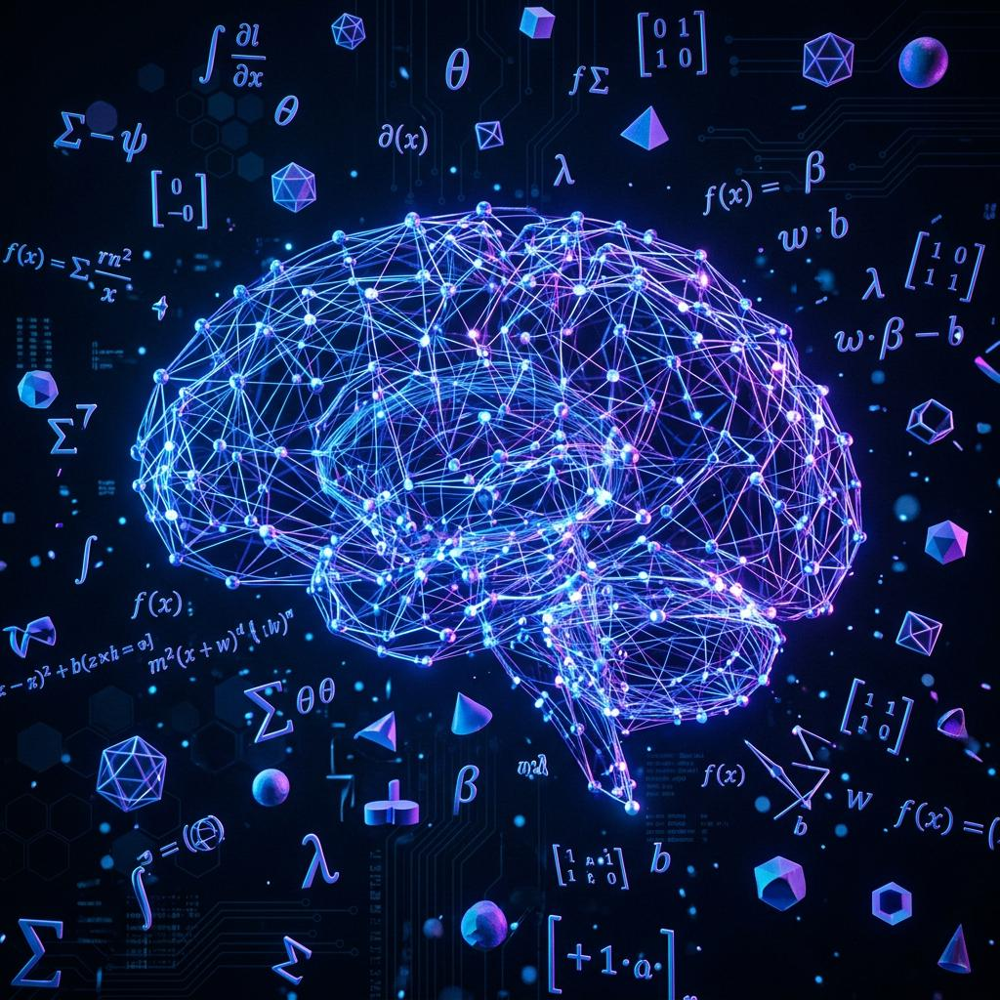

Understanding Artificial Intelligence, Machine Learning, datasets, models, and practical beginner projects.

My journey into Artificial Intelligence and Machine Learning started with curiosity. As a Mathematics student, I was fascinated by how mathematical concepts such as Statistics, Probability, Linear Algebra, and Calculus power intelligent systems.
While learning Python, I discovered that AI and Machine Learning combine Mathematics and Computer Science to solve real-world problems. This motivated me to explore the field further and begin building practical projects.
Artificial Intelligence (AI) refers to machines that can perform tasks requiring human intelligence such as decision-making, image recognition, language understanding, and prediction.
Machine Learning enables computers to learn patterns from data and make predictions without being explicitly programmed.
My Mathematics background helped me understand the foundation of Machine Learning algorithms.
Understanding data and distributions.
Prediction and uncertainty handling.
Matrices and vector operations.
Optimization and gradient descent.
To apply my learning, I started building beginner projects using Python, Pandas, NumPy, Matplotlib, and Scikit-Learn.
Main programming language for AI and ML.
Data cleaning and analysis.
Machine Learning algorithms and models.
My goal is to combine my Mathematics background with Artificial Intelligence and Machine Learning to build intelligent systems that solve real-world problems.
I continue learning new concepts, building projects, and exploring advanced topics such as Deep Learning, Computer Vision, and Generative AI.
Starting with AI and Machine Learning has been one of the most exciting parts of my technology journey. It perfectly combines my passion for Mathematics, Python programming, and problem-solving.